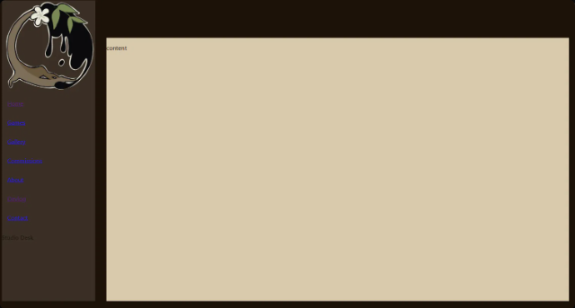
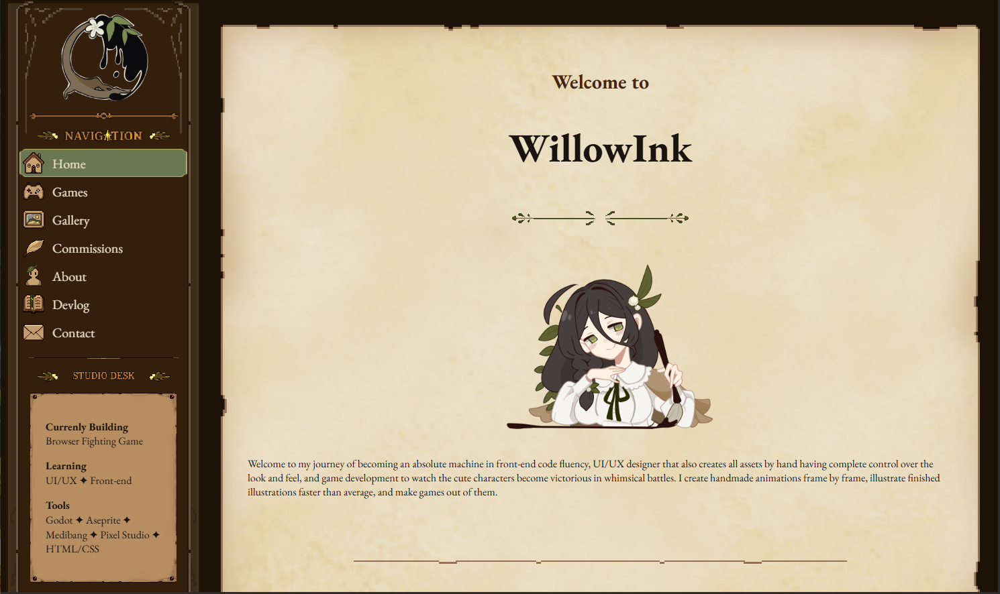
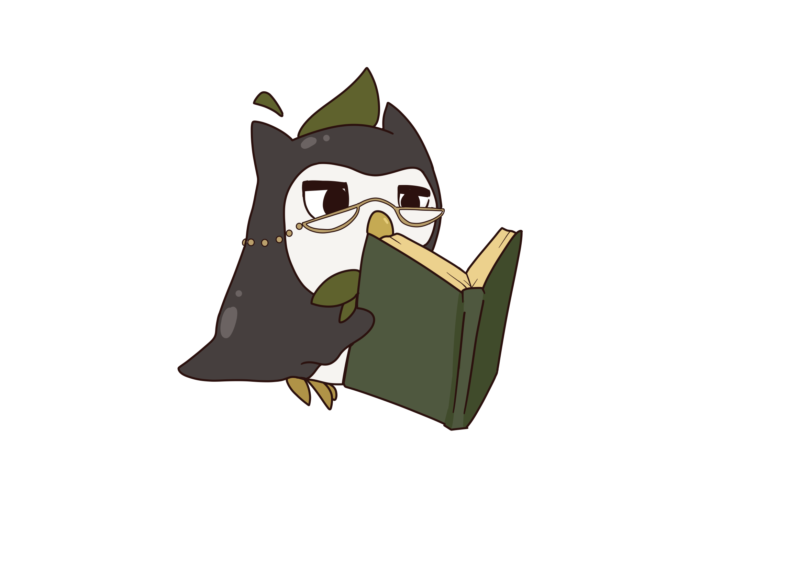
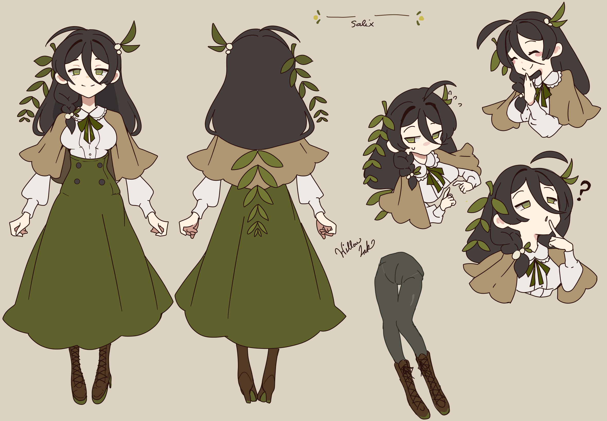
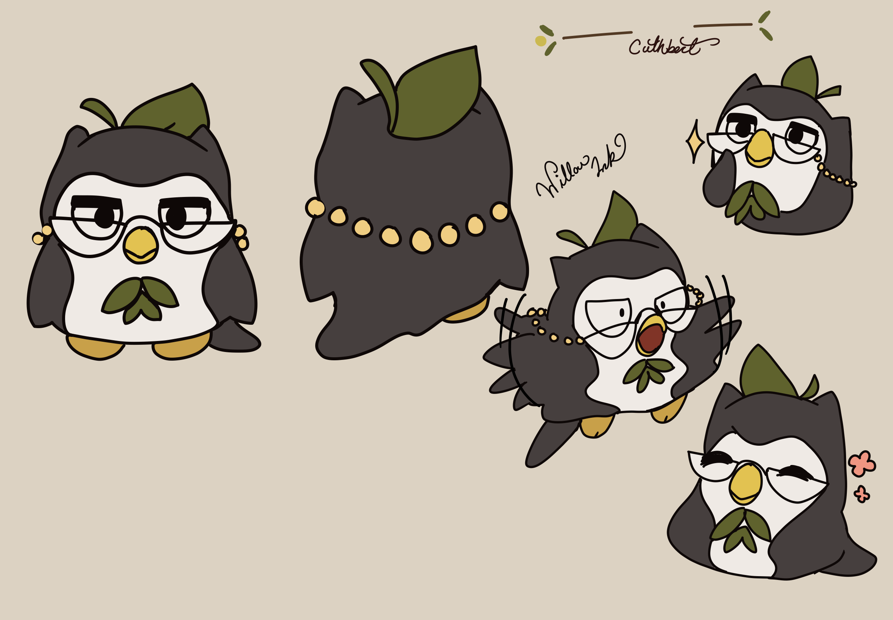

Devlog
2026.09.16
It has been done. The website skeleton is now dressed. The bones are no longer rattling!
Here is the un-clothed sad, dreary, before-disaster-in-an-infomercial skeleton website:

And here is the new and improved too cool for school look!

All assets handmade, in a combination of medibang, Libresprite and pixel studio. Most made in minutes as I went (namely the icons).
Tomorrow, I plan to adjust some things and address those links that lead to nowhere. For now, enjoy Cuthbert reading a book. I won't use him since I realize his glasses are a bit crooked, but wish him a good read anyways.
Until next time!

2026.09.15
After keeping house as dilligently as possible, I have managed progress in between!
The website is now equipped with a sidebar and a nice little parchment that these beautiful letters may lay upon for the users reading leisure.
The logo is up as well. Some things should be adjusted, but as of now it's up. more to come.
In other news, the mascots are made. Let me introduce them.

This lovely lady is Salix. A motherly, sweet yet clumsy calligrapher. She is the type of woman that gives the warmest embraces, but had forgotten she was defrosting meat since this morning. Don't worry! She still completes her tasks. However if through luck or unorthodox methods is a case by case basis.

Meet Cuthbert.
He is the voice of reason and the beacon of light that keeps the wandering ship that is Salix's mind on track. Or at least he thinks he is.
He is the epitome of dry wit, a stiff upper lip and a strict punctuality in accordance to completing tasks. Let's try to ignore his bias for propriety and grace. Even if it would be easier to bulldoze.
Where Salix is someone who likes to stop and admire the roses for its beauty, Cuthbert is one to remind her the white and red ones are at war and she should leave them to their devices lest she get sucked into their quarrel.
As you can see, he is a bit dramatic. Just a little.
Anyways, these two will be with us for a long time, and I can't wait to see them in action. I hope they make lots of people smile.
That's it for the day. Let's work harder in the future.
2026.09.09:
Studio site is live! First deployed today. Just the bare boned skeleton so far.
Art and mascot in progress. The skeleton will be clothed soon!
In reference to the mascot; I have an idea for a funny little old and wise bird with an attitude that contrasts with another mascot meant to make people feel warm, safe and welcome. Everyone needs a bit of that nowadays.
I also have some UI stylings ready. Basic UI buttons and menu screens.
Base concept for the first game in progress. Decided animations will be made in Pixel Art Studio for IOS. Made some frames already for idle playable character.
However, I made 2 idles because one I felt was too jumpy. The other I feel the skirt sways too much. I will adjust later after priorities. I'll post both for docu purposes:

I was thinking while drawing this that she uses the paintbrush as a spear. And I prioritize snappy yet fluid animations that feel good. But it might be too energetic for her personality. Meanwhile,

I like the stillness in this one. She's confident, smiling, having fun. Her hips should move, but her skirt is suggesting she is hula-hooping. I may go with this one after toning down the skirt.
That's all for today. Let's work on clothing the skeleton a bit next!